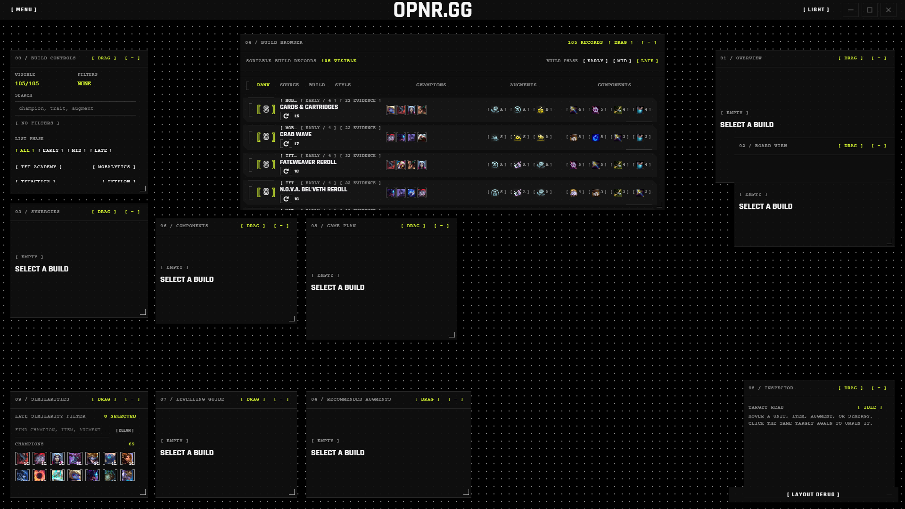
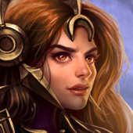
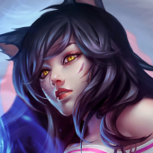
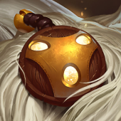
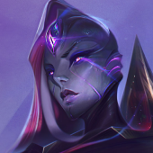
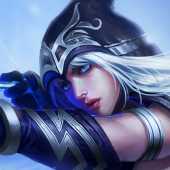
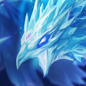
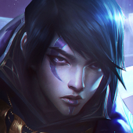
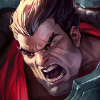

opnr.gg
4K promo proposal
After Effects quality target
45 seconds
Storyboard proposition
One command surface for the TFT lobby clock.
A high-energy product film that turns scattered meta research into a cinematic, data-dense desktop control room.
Format3840 x 2160
Runtime00:45
Frame rate60 fps
StyleDark UI / gold signal / violet depth

[ Scroll the board ] [ shot-by-shot ]
Brand reveal
00:09-00:13Reset
[ OPNR.GG ]
Build browser
00:13-00:19Core surface

[ S ]
Cards & Cartridges



[ S ]
Crab Wave




[ S ]
Fateweaver Reroll



One click opens the plan
00:19-00:26Panel explosion
03 / Synergies
StarGazer 3Bastion 2
Rogue 2
02 / Board View
Late board9 units
01 / Overview
Cards &Cartridges
06 / Components
7 demandsresolved
Similarity filter
00:26-00:32Decision assist
Late similarity filter
Find the closest playable line from what you already hit.




